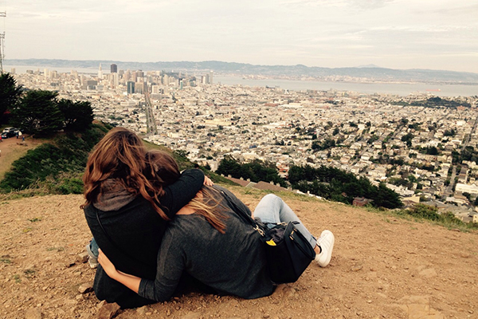
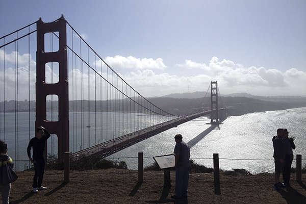
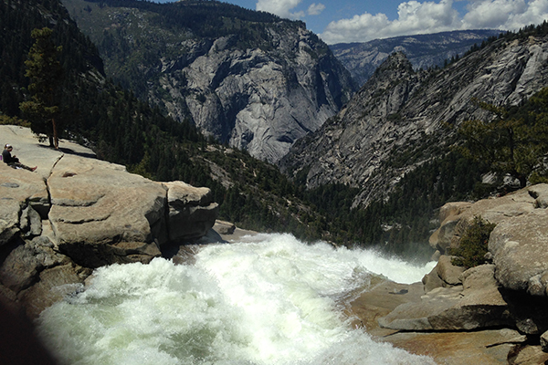

Twin Peaks, beautiful view in SF!
Gepost op 10 Oktober 2015
At 922 feet in elevation, Twin Peaks is second only to Mt. Davidson in height, offers spectacular views of the Bay Area, and is a world-famous tourist attraction. Originally called “Los Pechos de la Choca” (Breasts of the Maiden) by early Spanish settlers, these two adjacent peaks provide postcard views and a treasure trove of animal and plant diversity. Most visitors to Twin Peaks drive (or take a tourist bus) to the north peak parking lot to enjoy 180-degree views of the Bay Area. Lees verder
Gepost in: Views
Met tags: Places, Beautiful, San Francisco
Golden Gate Bridge of San Francisco
Gepost op 4 Juni 2015
The Golden Gate Bridge is a suspension bridge spanning the Golden Gate strait, the one-mile-wide, three-mile-long channel between San Francisco Bay and the Pacific Ocean. Lees verder
Gepost in: Monuments
Met tags: Bridge,San Francisco
Yosemite, wow!
Gepost op 3 Maart 2016
Yosemite National Park is set within California’s Sierra Nevada mountains. It’s famed for its giant, ancient sequoias, and for Tunnel View, the iconic vista of towering Bridalveil Fall and the granite cliffs of El Capitan and Half Dome. In Yosemite Village are shops, restaurants, the Yosemite Museum and the Ansel Adams Gallery, offering prints of the photographer’s renowned black-and-white landscapes of the area. Lees verder
Gepost in: Views